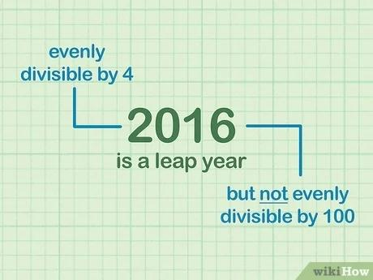

Bisext Year |
| Fluxograma | Algorithmi |
|---|---|
inicio ProgramaPrincipal
ler inteiro x "Year : "
se x % 400 == 0 || x % 4 == 0 && x % 100 != 0 então
escrever "Bisext"
senão
escrever "Common"
fim se
fim ProgramaPrincipal
|
| Input | Output |
|---|---|